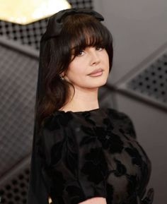
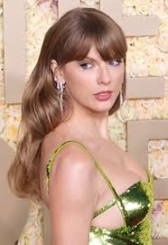
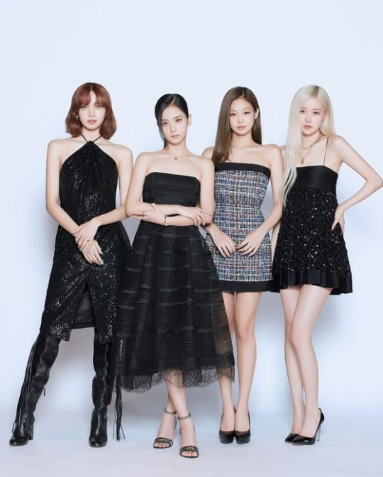
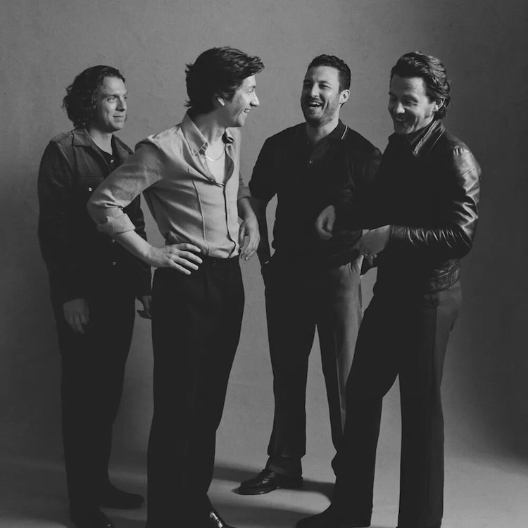
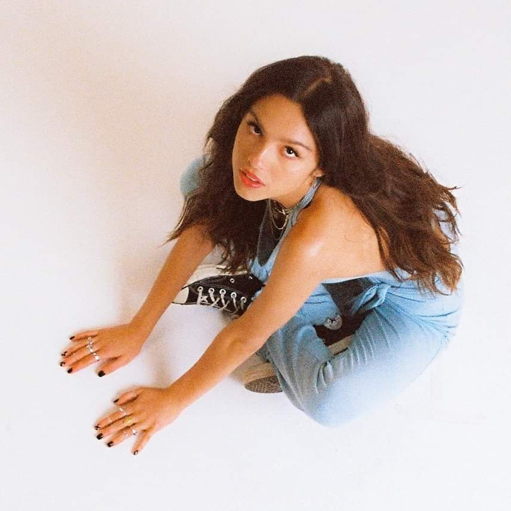

1. Lana Del Rey
Lana Del Rey, nacida Elizabeth Woolridge Grant el 21 de junio de 1985 en Nueva York, es una artista estadounidense que ha capturado la atención del público con su estilo único y su voz distintiva. Su música mezcla pop con elementos de indie, rock alternativo y una fuerte influencia cinematográfica, creando un sonido que evoca nostalgia y melancolía. Su debut, Born to Die (2012), fue un gran éxito, con sencillos icónicos como "Video Games" y "Summertime Sadness," que la catapultaron a la fama internacional.
2. Romeo Santos

Romeo Santos es reconocido por su habilidad para conectar con el público a través de su estilo vocal apasionado y sus letras sentimentales. Ha colaborado con varios artistas destacados y ha recibido numerosos premios, incluyendo premios Billboard de la Música Latina. Su influencia en la música latina y su capacidad para fusionar géneros han consolidado su estatus como uno de los artistas más importantes en el ámbito de la bachata y la música latina en general.
3. Taylor Swift
Taylor Swift es conocida por su conexión personal con sus fans a través de sus letras, que a menudo abordan temas de amor, amistad y crecimiento personal. Ha recibido numerosos premios, incluidos varios Grammy, y ha sido reconocida por su influencia en la música y la cultura pop. Su habilidad para reinventarse y su impacto en la industria la han establecido como una de las artistas más importantes de su generación.
4. The Weeknd

The Weeknd, cuyo nombre real es Abel Makkonen Tesfaye, nació el 16 de febrero de 1990 en Toronto, Canadá. Es un cantante, compositor y productor conocido por su estilo distintivo que fusiona R&B, pop y música electrónica. Saltó a la fama con su mixtape House of Balloons (2011) y ganó reconocimiento global con su álbum Starboy (2016), que incluye éxitos como "Starboy" y "I Feel It Coming."
5.Mitski
La música de Mitski es conocida por su intensidad emocional y su capacidad para combinar melodías pegajosas con una profunda introspección. Su estilo distintivo y su habilidad para explorar el lado vulnerable y a menudo oscuro de las experiencias humanas la han convertido en una voz influyente en el indie y la música alternativa.
6. Blackpink
BLACKPINK es un grupo de música surcoreano formado por YG Entertainment, debutó el 8 de agosto de 2016. Está compuesto por cuatro miembros: Jisoo, Jennie, Rosé y Lisa. El grupo es conocido por su combinación de pop, hip-hop y EDM, y ha ganado fama internacional por su estilo dinámico y sus actuaciones enérgicas.
BLACKPINK ha sido elogiado por sus impactantes videos musicales y coreografías, así como por su capacidad para conectar con audiencias globales. Han realizado colaboraciones con artistas internacionales como Dua Lipa y Lady Gaga, y son una de las bandas de K-pop más influyentes y exitosas a nivel mundial.
7. Arcangel
Arcángel es conocido por su influencia en el género del reguetón y su habilidad para mantenerse relevante en un mercado musical en constante cambio. Su estilo versátil y su presencia en la escena del reguetón lo han establecido como uno de los artistas prominentes en la música urbana latina.
Arcángel, cuyo nombre real es Austin Agustín Santos, nació el 23 de diciembre de 1985 en Nueva York. Es un cantante y compositor de reguetón y música urbana originario de Puerto Rico. Comenzó su carrera en la música a principios de los 2000 y se destacó en la escena del reguetón con su estilo distintivo y sus letras pegajosas.
8. Arctic Monkeys

Arctic Monkeys es una banda de rock originaria de Sheffield, Inglaterra, formada en 2002. El grupo está compuesto por Alex Turner (voz y guitarra), Jamie Cook (guitarra), Andy Nicholson (bajo) y Matt Helders (batería), aunque Nicholson dejó la banda en 2006 y fue reemplazado por Nick O'Malley.
Entre sus álbumes destacados se encuentran Favourite Worst Nightmare (2007), AM (2013), con el exitoso sencillo "Do I Wanna Know?", y Tranquility Base Hotel & Casino (2018). Arctic Monkeys ha sido elogiado por su evolución musical, su capacidad para reinventarse y sus enérgicas actuaciones en vivo. Han ganado numerosos premios, incluidos Brit Awards y NME Awards, y se han establecido como una de las bandas más influyentes del rock moderno.
9. Olivia Rodrigo
Olivia Rodrigo, nacida el 20 de febrero de 2003 en Temecula, California, es una cantante y compositora estadounidense que se convirtió en una de las figuras más destacadas de la música pop en 2021. Saltó a la fama con su sencillo debut "drivers license," que se convirtió en un éxito global y recibió elogios por su letra emotiva y su voz expresiva.
Olivia Rodrigo ha sido elogiada por su habilidad para capturar emociones crudas y auténticas en su música, así como por su talento como compositora. Ha recibido varios premios, incluidos premios Grammy, y ha sido reconocida como una de las voces emergentes más prometedoras en la música pop contemporánea.
10. Anuel AA

Anuel AA, cuyo nombre real es Emmanuel Gazmey Santiago, nació el 27 de noviembre de 1992 en San Juan, Puerto Rico. Es un rapero y cantante de reguetón y trap latino conocido por su estilo distintivo y sus letras crudas que a menudo abordan temas de la vida en la calle, amor y desamor.
A lo largo de su carrera, Anuel AA ha sido conocido tanto por su éxito en la música como por su vida personal y su tiempo en prisión, lo que ha influido en sus letras y en su imagen pública. Ha colaborado con varios artistas de renombre en la música urbana y ha recibido numerosos premios en la industria de la música latina.